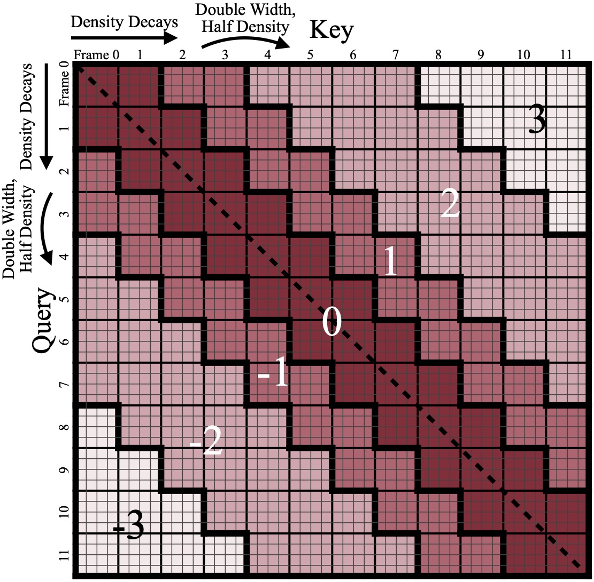

your-email (AT) example (dot) com
Hello! I am a senior undergraduate student in John Hopcroft Honors Class (Zhiyuan College), Shanghai Jiao Tong University, majoring in Computer Science.
I am interested in AI for Math, Autoformalization and Formal Verification.
I am very fortunate to work on research projects advised by Prof. Wenda Li, Prof. Qinxiang Cao, and Prof. Junchi Yan.
|
Massachusetts Institute of Technology, USA
Student Research Intern • Jul. 2025 - Present
Advisor: Prof. Song Han
|
|
Shanghai Jiao Tong University, China
B.Eng. in Computer Science • Sept. 2022 - June 2026 (Expected)
Member of ACM Honors Class (Top 5% students with interest in research)
GPA: 4.03/4.3, Rank: 3/30
Advisor: Prof. Yong Yu
|
* indicates equal contribution
|  |
Radial Attention: O(nlogn) Sparse Attention with Energy Decay for Long Video Generation
|
Role: giving lectures and recitation classes, writing documents and sample solutions, grading homework, creating exam questions, designing machine learning related final project lists
{kind=link}
{kind=link}
{kind=link}
{kind=link}